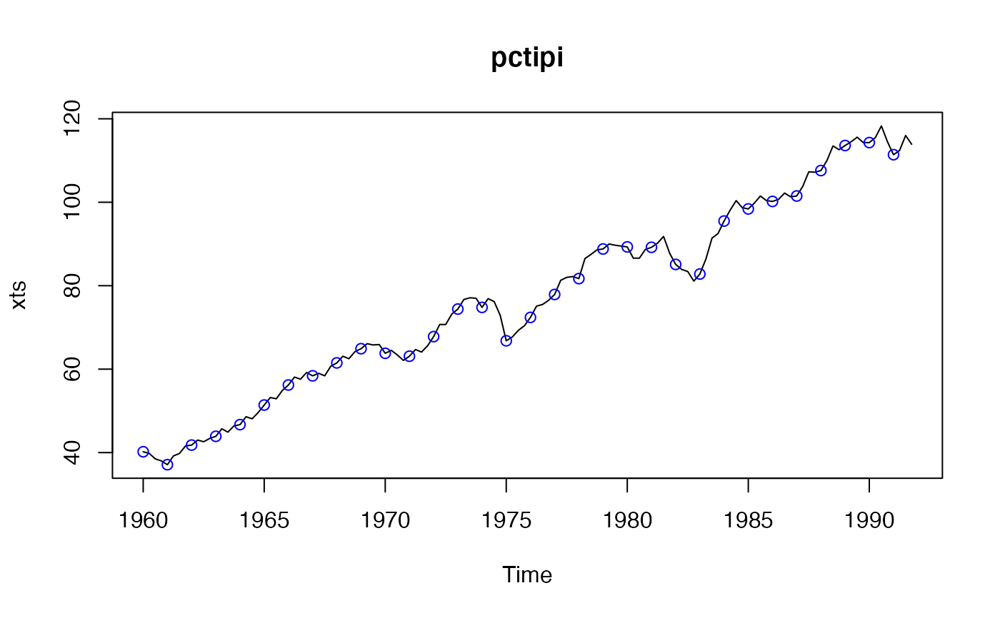

dataFranses1996.RdA multivariate time series containing the data used in examples by Franses (1996).
data("dataFranses1996")A multivariate quarterly time series.
Each column is a quarterly time series. The time series start and end
at different times, so NA's are used to align them in a single
multivariate time series. Detailed account of the sources of the data
is given by
Franses (1996; Data Appendix, p. 214)
.
year(column 1)
The time formatted as yyyy.Q, where yyyy is the year
and Q is the quarter (one of 1, 2, 3 or 4.). This column
was part of the original data but is not really needed here since
the time series object contains the time information.
USTotalIPI(column 2)
Total Industrial Production Index for the United States (1985 = 100), 1960.1--1991.4.
CanadaUnemployment(column 3)
Unemployment in Canada, measured in 1000 persons, 1960.1 - 1987.4.
GermanyGNP(column 4)
Real GNP in Germany, 1960.1 - 1990.4 .
UKTotalInvestment(column 5)
Real Total Investment in the United Kindom, 1955.1 - 1988.4.
SA_USTotalIPI(column 6)
Seasonally adjusted USTotalIPI.
SA_CanadaUnemployment(column 7)
Seasonally adjusted CanadaUnemployment.
SA_GermanyGNP(column 8)
Seasonally adjusted GermanyGNP.
UKGDP(column 9)
United Kingdom gross domestic product (at 1985 prices), 1955.1--1988.4.
UKTotalConsumption(column 10)
United Kingdom total consumption (at 1985 prices), 1955.1--1988.4.
UKNondurablesConsumption(column 11)
United Kindom nondurables consumption (at 1985 prices), 1955.1--1988.4.
UKExport(column 12)
United Kindom exports of goods and services (at 1985 prices), 1955.1--1988.4.
UKImport(column 13)
United Kindom imports of goods and services (at 1985 prices), 1955.1--1988.4.
UKPublicInvestment(column 14)
United Kindom public investment (at 1985 prices), 1962.1--1988.4.
UKWorkforce(column 15)
United Kindom workforce (consisting of workforce in employment and unemployment), 1955.1--1988.4.
SwedenNondurablesConsumption(column 16)
Real per capita non-durables consumption in Sweden (measured in logs), 1963.1--1988.1.
SwedenDisposableIncome(column 17)
Real per capita disposable income in Sweden (measured in logs), 1963.1--1988.1.
SA_SwedenNondurablesConsumption(column 18)
Seasonally adjusted SwedenNondurablesConsumption with
Census X-11 method, 1964.1--1988.1. (Using the approximate linear
Census X-11 filter given in Table 4.1, p. 52 in
Franses (1996)
and generating the forecasts
and backcasts as described in Ooms (1994)).
SA_SwedenDisposableIncome(column 19)
Seasonally adjusted SwedenDisposableIncome with Census X-11
method, 1964.1--1988.1. (Using the same method as above.)
More details on the individual time series are given by Franses (1996) .
The data were downloaded from
http://people.few.eur.nl/franses/research/data/data1.txt,
but this link is now broken.
Most of the time series in dataFranses1996 are available as
separate datasets in package `partsm'. The numbers should be the same
but note that, at the time of writing this, not all datasets there
carry complete time information.
Franses PH (1996). Periodicity and Stochastic Trends In Economic Time Series. Oxford University Press Inc., New York.
data(dataFranses1996)
class(dataFranses1996)
#> [1] "mts" "ts" "matrix"
colnames(dataFranses1996)
#> [1] "year" "USTotalIPI"
#> [3] "CanadaUnemployment" "GermanyGNP"
#> [5] "UKTotalInvestment" "SA_USTotalIPI"
#> [7] "SA_CanadaUnemployment" "SA_GermanyGNP"
#> [9] "UKGDP" "UKTotalConsumption"
#> [11] "UKNondurablesConsumption" "UKExport"
#> [13] "UKImport" "UKPublicInvestment"
#> [15] "UKWorkforce" "SwedenNondurablesConsumption"
#> [17] "SwedenDisposableIncome" "SA_SwedenNondurablesConsumption"
#> [19] "SA_SwedenDisposableIncome"
dim(dataFranses1996) # c(148, 19)
#> [1] 148 19
plot(dataFranses1996[ , 2:11])
tipi <- dataFranses1996[ , "USTotalIPI"]
plot(tipi)
## convert to PeriodicTS and remove NA's at the start and end
pctipi <- pcts(tipi)
pctipi <- window(pctipi, start = availStart(pctipi), end = availEnd(pctipi))
plot(pctipi)

## convert the whole dataset to class "PeriodicMTS"
pcfr <- pcts(dataFranses1996)
colnames(pcfr)[2:3] # "USTotalIPI" "CanadaUnemployment"
#> [1] "USTotalIPI" "CanadaUnemployment"
## subset as "PeriodicMTS"
pcfr2to3 <- pcfr[2:3]
plot(pcfr2to3)
## "[" "PeriodicMTS" even with length one arg.
pcfr2to2 <- pcfr[2]
pcfr2to2a <- pcfr["USTotalIPI"] # same
## use "[[" or $ to get "PeriodicTS"
pcfr2 <- pcfr[[2]]
pcfr2a <- pcfr[["USTotalIPI"]] # same
pcfr2b <- pcfr$USTotalIPI # same
identical(pcfr2, pcfr2a) # TRUE
#> [1] TRUE
identical(pcfr2, pcfr2b) # TRUE
#> [1] TRUE
cycle(pcfr)
#> An object of class "PeriodicTS"
#> Slot "cycle": Start: 1955 Quarter_1
#> Cycle: QuarterYearCycle
#> Number of seasons: 4
#>
#> Q1 Q2 Q3 Q4
#> Y1955 1 2 3 4
#> Y1956 1 2 3 4
#> Y1957 1 2 3 4
#> Y1958 1 2 3 4
#> Y1959 1 2 3 4
#> Y1960 1 2 3 4
#> Y1961 1 2 3 4
#> Y1962 1 2 3 4
#> Y1963 1 2 3 4
#> Y1964 1 2 3 4
#> Y1965 1 2 3 4
#> Y1966 1 2 3 4
#> Y1967 1 2 3 4
#> Y1968 1 2 3 4
#> Y1969 1 2 3 4
#> Y1970 1 2 3 4
#> Y1971 1 2 3 4
#> Y1972 1 2 3 4
#> Y1973 1 2 3 4
#> Y1974 1 2 3 4
#> Y1975 1 2 3 4
#> Y1976 1 2 3 4
#> Y1977 1 2 3 4
#> Y1978 1 2 3 4
#> Y1979 1 2 3 4
#> Y1980 1 2 3 4
#> Y1981 1 2 3 4
#> Y1982 1 2 3 4
#> Y1983 1 2 3 4
#> Y1984 1 2 3 4
#> Y1985 1 2 3 4
#> Y1986 1 2 3 4
#> Y1987 1 2 3 4
#> Y1988 1 2 3 4
#> Y1989 1 2 3 4
#> Y1990 1 2 3 4
#> Y1991 1 2 3 4
frequency(pcfr)
#> [1] 4